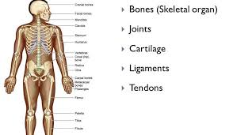
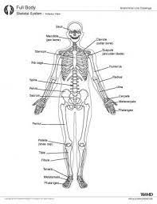

The skeletal system is your body’s central framework. It consists of bones and connective tissue, including cartilage, tendons, and ligaments. It’s also called the musculoskeletal system.
****FUNCTION****
What does the skeletal system do?

Allows movement: Your skeleton supports your body weight to help you stand and move. Joints, connective tissue and muscles work together to make your body parts mobile.
Produces blood cells: Bones contain bone marrow. Red and white blood cells are produced in the bone marrow.
Protects and supports organs: Your skull shields your brain, your ribs protect your heart and lungs, and your backbone protects your spine.
Stores minerals: Bones hold your body’s supply of minerals like calcium and vitamin D.
****ANATOMY****
What are the parts of the skeletal system?

The skeletal system is a network of many different parts that work together to help you move. The main part of your skeletal system consists of your bones, hard structures that create your body’s framework — the skeleton. There are 206 bones in an adult human skeleton. Each bone has three main layers:
Periosteum: The periosteum is a tough membrane that covers and protects the outside of the bone.
Compact bone: Below the periosteum, compact bone is white, hard, and smooth. It provides structural support and protection.
Spongy bone: The core, inner layer of the bone is softer than compact bone. It has small holes called pores to store marrow.
The other components of your skeletal system include:
Cartilage: This smooth and flexible substance covers the tips of your bones where they meet. It enables bones to move without friction (rubbing against each other). When cartilage wears away, as in arthritis, it can be painful and cause movement problems.
Joints: A joint is where two or more bones in the body come together. There are three different joint types. The types of joints are:
Immovable joints: Immovable joints don’t let the bones move at all, like the joints between your skull bones.
Partly movable joints: These joints allow limited movement. The joints in your rib cage are partly movable joints.
Movable joints: Movable joints allow a wide range of motion. Your elbow, shoulder, and knee are movable joints.
Ligaments: Bands of strong connective tissue called ligaments hold bones together.
Tendons: Tendons are bands of tissue that connect the ends of a muscle to your bone.
****CONDITIONS AND DISORDERS****
What are some common conditions that can affect the skeletal system?
Arthritis: Age, injury, and medical conditions such as Lyme disease can lead to arthritis, a painful wearing down of joints.
Fracture: Disease, a tumor, or trauma can put stress on a bone, causing it to break.
Osteosarcoma: Cancer that forms in the bones can cause tumors that may weaken and break bones.
Osteoporosis: Bone loss caused by not getting enough calcium can lead to fragile and brittle bones, known as osteoporosis
Sprains and tears: Age, disease and trauma can cause connective tissue to overstretch and tear.